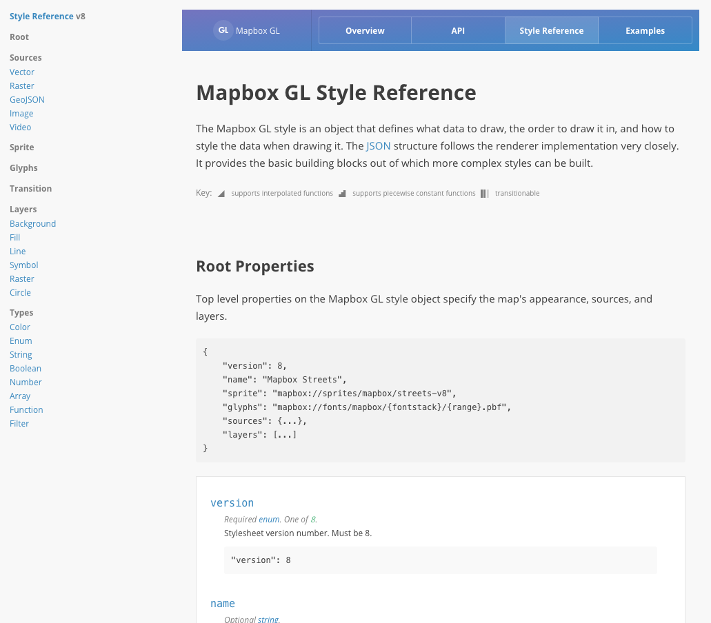
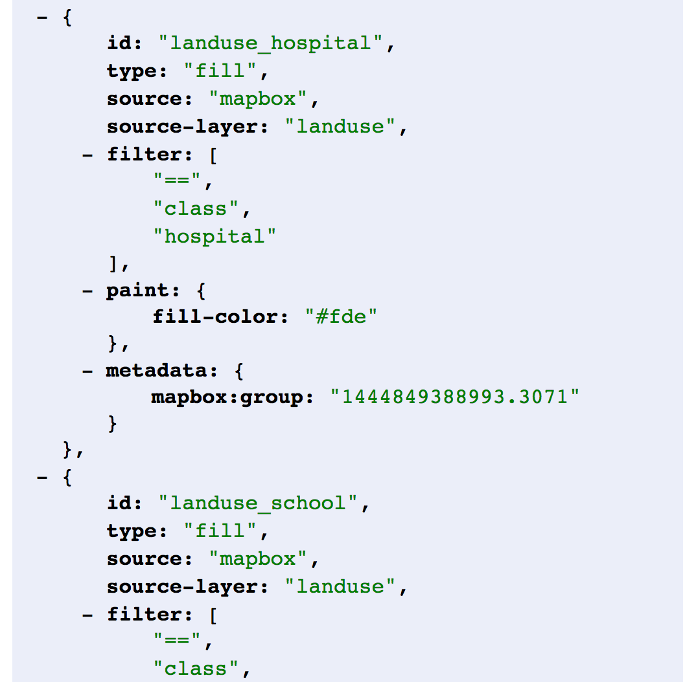

WTFGL: a beginner's guide to the future of open source web mapping
Hi! I'm
Lyzi. I work at
Mapbox.
This talk: what is GL? How did we get here? Where are we going? And most importantly, why?
Let's start with the whole how we got here thing.
So, pre-GL web maps.
First, 1996, there was MapQuest: the pioneer.
No panning, no zooming, just full page refreshes.
Then came the Googles, which introduced a new standard to web mapping:
The map tile.

Map tiles project the world into a square (all hail web mercator) and increase (exponentially) the number of squares it takes to make up the whole world when the map is zoomed in.
This makes the map faster and more agile -- instead of loading the whole world or giant images, the page loads tiny images only in the places you're looking.
Tiling introduced standardization to interactive maps, which facilitated a thriving ecosystem of mapping tools.
... including a little company called
Mapbox and a little tool called
TileMill.

 TileMill
TileMill was the first design tool from
Mapbox. It was for creating map tiles.
You loaded your vector data into TileMill, gave it some styling rules with CartoCSS, and exported the tileset of images as mbtiles.
The core of this software was a little tool called Mapnik.
 Mapnik
Mapnik is the monster that
eats data and stylesheets and
poops out map tiles with the
exact right extents, at the
exact right zoom levels, stored in the
exact right structure.
Mapnik is magical. All hail
Mapnik.

These rendered tiles were then stored on the server and served to the browser on request from a web mapping library.
But storing image tiles on the server was limiting, especially in the face of Retina screens and the need to recreate tilesets frequently.
So then came what we now call Mapbox Studio Classic, and with it a new paradigm for map tile creation.
(Read: vector tiles.)
Vector tiles separate data storage from map rendering.
With the raster tile model, rendering was the core of the operation, as images were stored on the server and served to the browser. With vector tiles, rendering only needs to happen at the very end of the process.
 Mapbox Studio Classic
Mapbox Studio Classic was released as a
new desktop design tool to
replace TileMill, focusing on this
separated data/style paradigm.
When using TileMill, your output was a set of map tiles.
From Mapbox Studio Classic, Mapbox stores your style and its associated vector tileset. When a web map is created using your style's ID and the browser requests tiles, the style and source are passed to Mapnik to render into map tiles ON THE FLY.
This made it so much easier to make basemaps.
But that's just it, right? With map tiles, you're making basemaps. Interactive data is served separately as GeoJSON.
This is limiting.
To add interactive data, you needed to add an overlay using your web mapping library and GeoJSON data, and there are limitations...
Unless you enjoy crashing browsers, of course!
So now that we separated styles from sources when implementing vector tiles, the two are independent of each other.
Who says we need to keep using Mapnik to render image tiles? Why don't we just use a different renderer that better meets our mappy needs?
So we did. And we called it Mapbox GL.
Mapbox GL is a way to render maps with vectors in the browser rather than as images on the server.
Up until now, all rendering has been happening server-side with Mapnik. Vector tiles are combined with CartoCSS styles, fed to Mapnik, and raster tiles are created and served to the browser.
With Mapbox GL, the rendering happens in your browser with the help of your device's graphics processing unit.
This makes map loading hella crazy stupid fast. It also means you can do cool stuff like rotating and tilting the map, smooth/infinite zooming, and more!
So in a practical sense, how does this work?
Because maps are being rendered in the browser (or on a device), we have to give some guidance on what to draw and how to draw it.

The style contains all the information needed to draw your map, including references to data, fonts, images, and, most importantly, styling rules.
These styling rules are defined in the spec as layers -- styled representations of data in your map.

So what does
Mapbox Studio do? It is a
visual interface for creating GL styles.
And
Mapbox GL JS? A
rendering library that takes that style object, combines those
vector tiles and
style rules to render them on the page with the help of your GPU.
Yay! That's how GL works! Here are some puppies!
Now I take the time I have left and do a small rant on why the heck we did this and what the heck comes next.

The future:
fragmented,
malleable,
beautiful,
self-directed.
Go wide with me for a second. Why do we make maps?
We make maps to solve problems.
Think about the types of questions you ask. Are they more focused on the problem you're trying to solve, or the technology you're using to solve it?
We all live within the constraints of what we know to be possible. What would it be like to live outside of those constraints?
 This is the power of GL.
This is the power of GL.For realsies, no joke: we are inventing the future.
That's the whole open source thing right? Sure.
But this is more than that. We can make so many more choices, from cartography to data analysis techniques to presentation.
We are making tools malleable and fragmented and open source and we can all contribute and drive how this thing happens.
The more people use the new technology, the more we ask real questions and solve real problems.
I believe in you! You are going to make amazing things.
Remember:


Thanks!